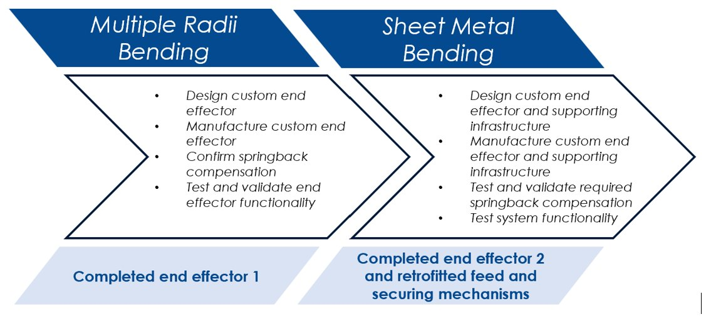
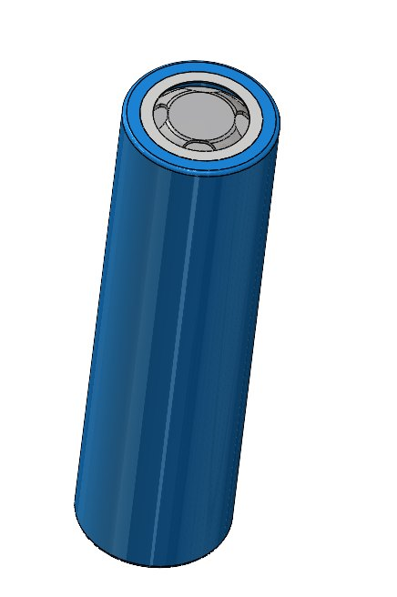
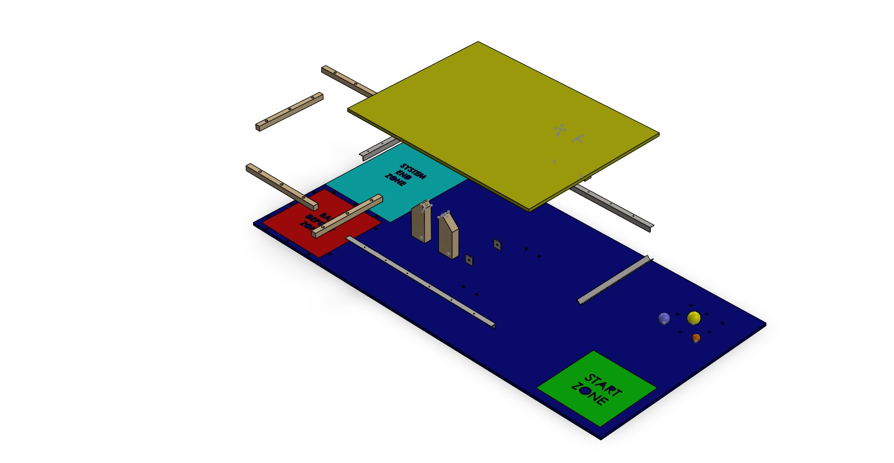
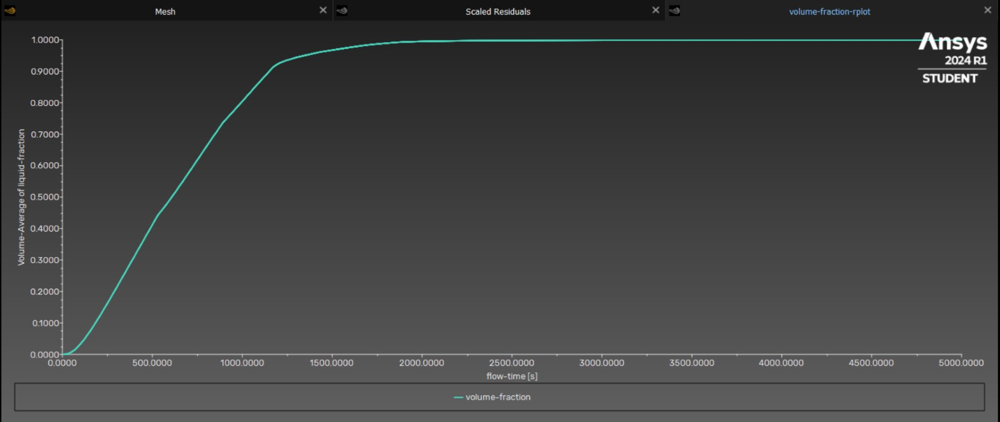

Smart mechanical systems
Mechanical platforms where geometry, sensing, and system behaviour can be connected through practical prototypes and honest test notes.
Field notebook / build archive
Mechanical Engineering Field Notes
Mechanical Engineering Honours, UTS
I document mechanical design work through CAD models, prototypes, test notes, and build records, with a focus on robot hardware, sensing-enabled systems, and product-style mechanical subsystems.
Visual evidence




Build Index Preview
| Code | Project | Domain | Evidence | Open |
|---|---|---|---|---|
| FN-01 | Kinematic Puppet / Cobot Prototyping | Cobotics / HRI / Robot Hardware | Repository + public build record | Open note |
| FN-02 | Confined-Space Inspection Robot | Robotics / Mobile Robot / Robot Hardware | Documentation + integration record | Open note |
| FN-03 | UTS Motorsports Autonomous Hardware CAD | Autonomous Systems / Motorsports / CAD | Repository + fabrication record | Open note |
| FN-04 | Additive Manufacturing Plier Project | Additive Manufacturing / Topology Optimisation / CAD | Repository + DFM record | Open note |
Current Research Direction
Mechanical platforms where geometry, sensing, and system behaviour can be connected through practical prototypes and honest test notes.
Compact robot hardware designed around cameras, sensors, controllers, power layout, wiring paths, and access for fixes.
A future research direction in using measured vibration and mechanical behaviour to understand health, performance, and operating state when validated data is available.
Human-centred robot hardware and mechanical subsystem work shaped by modularity, manufacturability, safe interaction, testing, and clear documentation.
Engineering Methods
Mechanical layout, interface geometry, mounting, access, fit, and tolerancing notes.
Printed, fabricated, assembled, and revised hardware records with makeability kept visible.
Sensor, controller, wiring, power, and robot-hardware integration.
Public-safe design notes, selected visuals, test planning, and records that explain decisions.